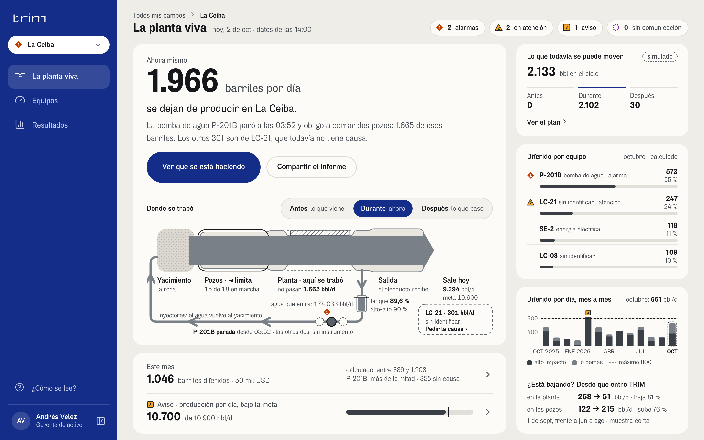
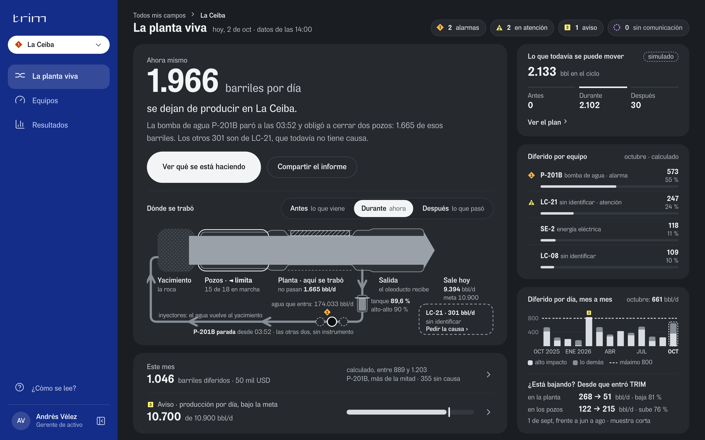
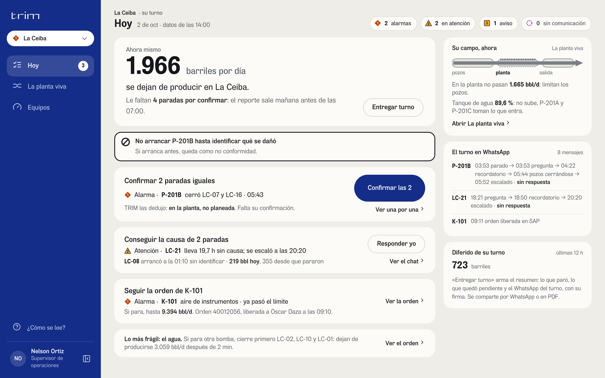
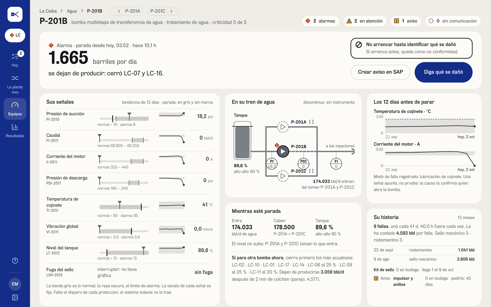
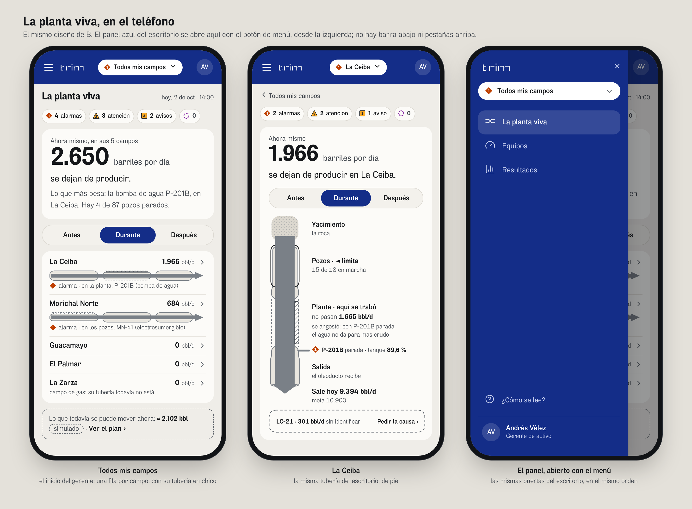
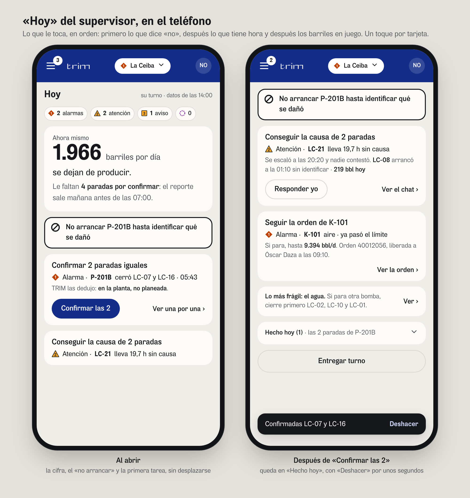
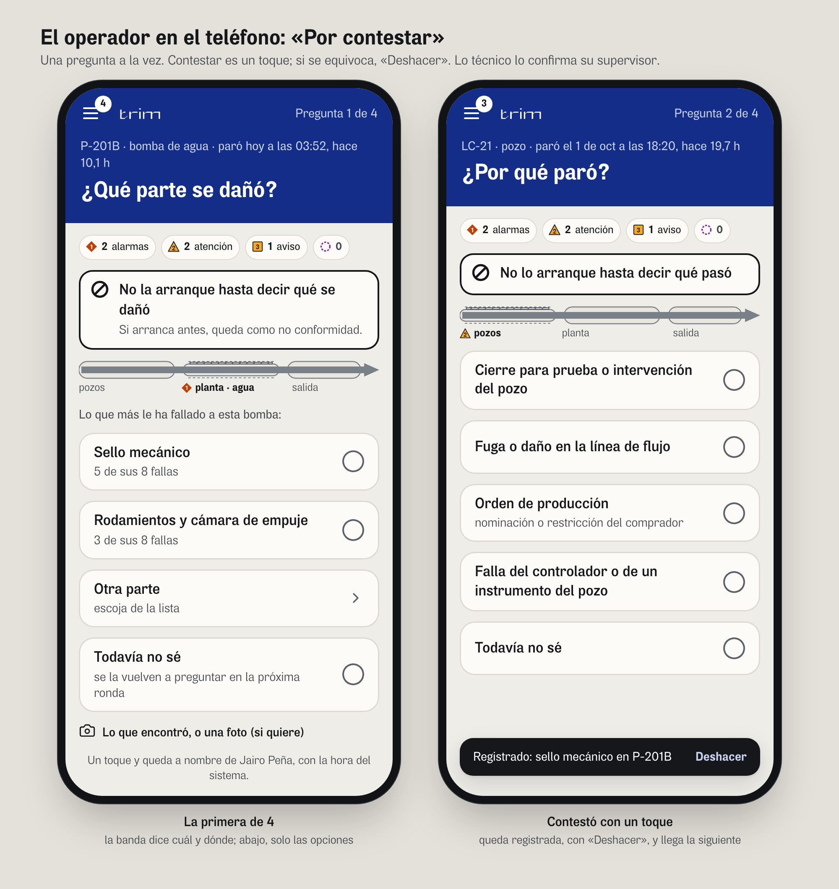

Datos del demo, La Ceiba, 2 de octubre a las 14:00. El panel azul va al costado; en el teléfono se abre con el menú. Lo normal en gris; el color solo marca lo que pide algo, siempre con su forma y su palabra.






